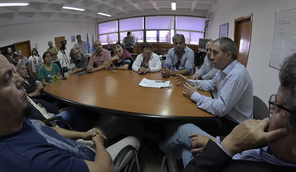

Real Chubut - Agencia de Noticias


El Gobierno y ATE cerraron aumento salarial remunerativo y escalonado

Se comenzará a cobrar con el sueldo del mes de noviembre llegando a febrero por lo que será acumulativo “con lo cual también impacta en los jubilados” dijo el ministro Economía. El acuerdo se firmó este martes y participaron los ministros Cisterna, Oca y el titular de ATE, Guillermo Quiroga. Se destacó “el diálogo” entre las partes y en marzo habrá paritarias.
El Gobierno del Chubut cerró este martes con la dirigencia de la Asociación de Trabajadores del Estado (ATE), un aumento salarial remunerativo y escalonado para empleados públicos de la provincia que comenzará a cobrarse con el sueldo del mes de noviembre llegando a febrero. La decisión también incluye a los jubilados y se alcanzó el compromiso de discutir paritarias en el mes de marzo.
El acuerdo firmado es el resultado del diálogo que ambas partes venían manteniendo desde hace un tiempo en el marco de una serie de conversaciones. El aumento se liquidará a lo largo de cuatro meses: el primer tramo será 1.000 pesos y se cobrará con el sueldo de noviembre; en diciembre se pagarán otros 2.000 pesos; en enero 1.250 pesos y en febrero 1.500 pesos, lo que hace un aumento promedio de un 15%.
Los ministros Coordinador de Gabinete, Víctor Cisterna y de Economía, Pablo Oca firmaron en representación del Gobierno de la Provincia el acuerdo, en tanto que por el lado de los trabajadores lo hizo el titular de ATE, Guillermo Quiroga, que estuvo acompañado por representantes de cada una de las seccionales del gremio estatal.
ESFUERZO DE AMBAS PARTES
“Estamos muy satisfechos de poder lograr este acuerdo, por el entendimiento sobre todo”, declaró el ministro de Economía, Pablo Oca, tras la rúbrica del acta acuerdo alcanzada en una reunión que se desarrolló este martes a primera hora de la tarde en la sede de la cartera económica en Rawson. Oca valoró el respaldo del gobernador Mario Das Neves para llevar adelante estas conversaciones, al indicar que “venimos trabajando desde hace mucho tiempo para poder lograr este acuerdo” y puntualizó que “salvo alguna excepción, con la mayoría de los gremios nos hemos podido entender y hemos venido manteniendo este diálogo”.
“Nosotros nunca rompimos el diálogo ni cerramos ninguna mesa de discusión”, destacó el ministro y valoró los encuentros que se han venido dando sin hacer publicidad de los mismos con los diferentes sectores del Estado. “Nunca cerramos la puerta, y por eso, en el marco de esto que es lo que podemos pagar, nosotros podemos seguir conversando. Si la ambición es otra cosa, lamentablemente, va a haber conflictos”, puntualizó.

Oca explicó que el primer tramo de este aumento que se pagará a fines de noviembre “representan 40 millones de pesos” y valoró el carácter “remunerativo” del incremento “con lo cual también tiene el impacto en los jubilados para cumplir y llevar tranquilidad a los jubilados, que es remunerativo”, remarcó.
Y para brindar más precisiones detalló que tanto trabajadores en actividad como jubilados “van a tener este aumento en sus salarios durante noviembre, diciembre, enero y febrero”. Los cuatro meses, trabajadores y jubilados, van a tener este incremento en sus salarios”.
“En total son 1.000 pesos en noviembre, 2.000 en diciembre, 1.250 en enero, 1.500 en febrero, y el compromiso de volver en marzo a entablar las conversaciones para el año que viene”.
Agregó que “ha sido un esfuerzo el que hicimos nosotros y también el sector gremial en entender cuáles eran las limitaciones” y rescató el respeto que hubo en dar a conocer la negociación porque “uno debe ser muy cuidadoso con las declaraciones tanto de un lado como del otro, así lo entendimos ambos sectores”.
ATE VALORÓ EL AUMENTO Y PARITARIAS EN MARZO
Por su parte el titular de ATE Chubut, Guillermo Quiroga, celebró el acuerdo alcanzado con el Gobierno de la Provincia y también el hecho “de discutir paritarias en el mes de marzo de 2017 con ese monto incorporado”.
Dijo además que “acuerdo tiene que ver que, en promedio, esa incorporación al sueldo básico da un 15% de aumento, sobre todo en el sector de Auxiliares de la Educación, y de la Administración Pública Central”.
Quiroga explicó que “nos tocó firmar con los sectores de la Administración Pública Central, Organismos Descentralizados, Entes Autárquicos, Salud, Auxiliares de la Educación” ya agregó que el acuerdo “incluye a Lotería, Guardafaunas, La Trochita, Dirección de Pesca Continental, Familia, casi todos”.
“Esto ha sido una excepción no poder sentarse a discutir sector por sector, porque justamente, un aumento porcentual iba a llevar a un incremento –por ahí-, insignificante para los sectores con sueldos menores a los 12 mil pesos, y por ahí, aquellos empleados de la Administración Pública con los suelos más elevados, con categorías más altas iban a tener una diferencia importante, que incluso la iba a absorber el Impuesto a las Ganancias. Así es que esa discusión en el mes de marzo también queremos llevarla, para corregir esas distorsiones que hay, porque hay un adicional que se llama ‘Mínimo Garantizado’, que afecta el sueldo de ese sector de trabajadores, donde se aumenta parte del sueldo básico y luego, se deduce de ese adicional, por lo tanto, algunos aumentos no llegan”, indicó.
Pero sobre todo el dirigente destacó que “como este aumento es remunerativo, va a ser incorporado al sector de los pasivos, así que los jubilados también van a percibir este aumento en lo que son sus haberes jubilatorios, de acá hasta el mes de marzo y también va a estar incorporado a su haber”.
PUBLICIDAD